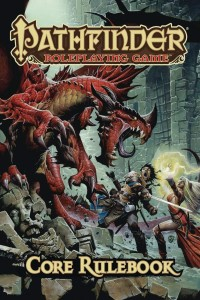
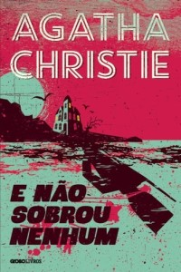
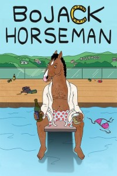

Olá, meu nome é Mateus Henrique Cavalcante. Tenho 25 anos. Sou filho de Ariovaldo Cavalcante e Solange Beatriz Debona Cavalcante. Nasci em Alto-Piquiri - PR, mas moro em Toledo - PR há 18 anos. Fiz o ensino fundamental e médio no Colégio Estadual Dario Vellozo. Sou formado em Direito pela UNIPAR - Universidade Paranaense. Além do Direito, me interesso muito por programação, razão pela qual escolhi o curso de TSI na UTFPR - Universidade Tecnológica Federal do Paraná. Um dos meus sonhos é trabalhar em alguma empresa de desenvolvimento de jogos ou em home-office para alguma empresa do exterior. Além disso, penso também em ter um site para falar sobre música, tendo em vista que passo a maior parte do dia ouvindo e gosto de dar minha opinião sobre alguns gêneros musicais que conheço.
Sou advogado, inscrito na OAB/PR n. 80.115 e trabalho num escritório de advocacia com meu pai desde 2014. Fui estagiário no Fórum Juiz Vilson Balão em Toledo de 2011 à 2013. Espero, em breve, conseguir estágio (mesmo que não remunerado) na área de TI, e, após obter experiência de programação, conseguir um bom emprego. Penso muito em, futuramente, unir Direito ao conhecimento que obterei no curso de TSI.
Meus hobbies incluem ler, ouvir músicas, jogar, assistir séries e sair com amigos/namorada. Na leitura, gosto muito de fantasia ("As Crônicas de Gelo e Fogo" de George R.R. Martin), suspense ("E não sobrou nenhum" de Agatha Christie) e terror ("Nas montanhas da loucura" de H.P. Lovecraft). Quanto aos jogos, sou muito fã de RPGs, tanto digitais, quanto de mesa. Um dos meus jogos digitais favoritos é Kingdom Hearts II, da Square Enix. Nos RPGs de mesa, me aventurei um pouco no D&D 3.5, mas o principal foi o Pathfinder. E, finalmente, séries. Consumo um pouco menos desse tipo de conteúdo, mas uma das minhas favoritas é BoJack Horseman (Netflix).
  